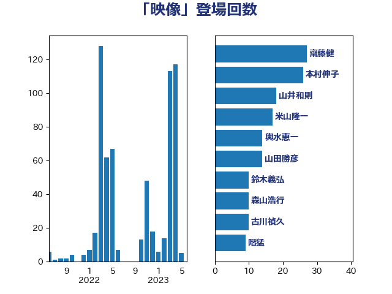

単語「映像」

| 齋藤健 | 自由民主党 | 27 回 |
| 本村伸子 | 日本共産党 | 26 回 |
| 山井和則 | 立憲民主党 | 18 回 |
| 米山隆一 | 立憲民主党 | 17 回 |
| 輿水恵一 | 公明党 | 14 回 |
| 山田勝彦 | 立憲民主党 | 14 回 |
| 鈴木義弘 | 国民民主党 | 10 回 |
| 森山浩行 | 立憲民主党 | 10 回 |
| 古川禎久 | 自由民主党 | 10 回 |
| 階猛 | 立憲民主党 | 9 回 |
| 牧山ひろえ | 立憲民主党 | 9 回 |
| 宮本岳志 | 日本共産党 | 9 回 |
| 岸田文雄 | 自由民主党 | 8 回 |
| 佐々木さやか | 公明党 | 8 回 |
| 山下貴司 | 自由民主党 | 7 回 |
| 西村康稔 | 自由民主党 | 6 回 |
| 萩生田光一 | 自由民主党 | 6 回 |
| 塩村あやか | 立憲民主党 | 6 回 |
| 堤かなめ | 立憲民主党 | 6 回 |
| 上川陽子 | 自由民主党 | 6 回 |
| 石川大我 | 立憲民主党 | 5 回 |
| 日下正喜 | 公明党 | 5 回 |
| 山添拓 | 日本共産党 | 5 回 |
| 小川淳也 | 立憲民主党 | 5 回 |
| 井出庸生 | 自由民主党 | 5 回 |
| 上野賢一郎 | 自由民主党 | 5 回 |
| 鈴木敦 | 国民民主党 | 4 回 |
| 金子恭之 | 自由民主党 | 4 回 |
| 足立敏之 | 自由民主党 | 4 回 |
| 西田実仁 | 公明党 | 4 回 |
| 片山さつき | 自由民主党 | 4 回 |
| 松原仁 | 立憲民主党 | 4 回 |
| 斉藤鉄夫 | 公明党 | 4 回 |
| 大口善徳 | 公明党 | 4 回 |
| 北神圭朗 | 無所属 | 4 回 |
| 仁比聡平 | 日本共産党 | 4 回 |
| 中西祐介 | 自由民主党 | 4 回 |
| 長妻昭 | 立憲民主党 | 3 回 |
| 足立康史 | 日本維新の会 | 3 回 |
| 芳賀道也 | 国民民主党 | 3 回 |
| 細田博之 | 自由民主党 | 3 回 |
| 篠原豪 | 立憲民主党 | 3 回 |
| 石川香織 | 立憲民主党 | 3 回 |
| 石井苗子 | 日本維新の会 | 3 回 |
| 林芳正 | 自由民主党 | 3 回 |
| 松本剛明 | 自由民主党 | 3 回 |
| 有村治子 | 自由民主党 | 3 回 |
| 岡本あき子 | 立憲民主党 | 3 回 |
| 小沢雅仁 | 立憲民主党 | 3 回 |
| 奥野総一郎 | 立憲民主党 | 3 回 |
| 國重徹 | 公明党 | 3 回 |
| 吉良よし子 | 日本共産党 | 3 回 |
| 吉川沙織 | 立憲民主党 | 3 回 |
| 務台俊介 | 自由民主党 | 3 回 |
| 佐藤啓 | 自由民主党 | 3 回 |
| 中川正春 | 立憲民主党 | 3 回 |
| おおつき紅葉 | 立憲民主党 | 3 回 |
| 高木啓 | 自由民主党 | 2 回 |
| 阿部弘樹 | 日本維新の会 | 2 回 |
| 鈴木俊一 | 自由民主党 | 2 回 |
| 羽田次郎 | 立憲民主党 | 2 回 |
| 福山哲郎 | 立憲民主党 | 2 回 |
| 石井章 | 日本維新の会 | 2 回 |
| 渡辺周 | 立憲民主党 | 2 回 |
| 清水真人 | 自由民主党 | 2 回 |
| 沢田良 | 日本維新の会 | 2 回 |
| 柴田巧 | 日本維新の会 | 2 回 |
| 枝野幸男 | 立憲民主党 | 2 回 |
| 杉久武 | 公明党 | 2 回 |
| 末松信介 | 自由民主党 | 2 回 |
| 斎藤アレックス | 国民民主党 | 2 回 |
| 徳永久志 | 立憲民主党 | 2 回 |
| 川田龍平 | 立憲民主党 | 2 回 |
| 山崎正恭 | 公明党 | 2 回 |
| 天畠大輔 | れいわ新選組 | 2 回 |
| 嘉田由紀子 | 無所属 | 2 回 |
| 和田政宗 | 自由民主党 | 2 回 |
| 勝部賢志 | 立憲民主党 | 2 回 |
| 井上哲士 | 日本共産党 | 2 回 |
| 鰐淵洋子 | 公明党 | 1 回 |
| 須藤元気 | 無所属 | 1 回 |
| 音喜多駿 | 日本維新の会 | 1 回 |
| 青島健太 | 日本維新の会 | 1 回 |
| 鈴木宗男 | 日本維新の会 | 1 回 |
| 金子恵美 | 立憲民主党 | 1 回 |
| 野田国義 | 立憲民主党 | 1 回 |
| 重徳和彦 | 立憲民主党 | 1 回 |
| 里見隆治 | 公明党 | 1 回 |
| 角田秀穂 | 公明党 | 1 回 |
| 西村智奈美 | 立憲民主党 | 1 回 |
| 藤田文武 | 日本維新の会 | 1 回 |
| 藤木眞也 | 自由民主党 | 1 回 |
| 藤岡隆雄 | 立憲民主党 | 1 回 |
| 蓮舫 | 立憲民主党 | 1 回 |
| 自見はなこ | 自由民主党 | 1 回 |
| 緑川貴士 | 立憲民主党 | 1 回 |
| 竹内真二 | 公明党 | 1 回 |
| 穀田恵二 | 日本共産党 | 1 回 |
| 神田憲次 | 自由民主党 | 1 回 |
| 礒崎哲史 | 国民民主党 | 1 回 |
| 矢倉克夫 | 公明党 | 1 回 |
| 田村貴昭 | 日本共産党 | 1 回 |
| 田村智子 | 日本共産党 | 1 回 |
| 猪瀬直樹 | 日本維新の会 | 1 回 |
| 牧野たかお | 自由民主党 | 1 回 |
| 牧義夫 | 立憲民主党 | 1 回 |
| 熊谷裕人 | 立憲民主党 | 1 回 |
| 源馬謙太郎 | 立憲民主党 | 1 回 |
| 清水貴之 | 日本維新の会 | 1 回 |
| 浜田聡 | NHK党 | 1 回 |
| 浅川義治 | 日本維新の会 | 1 回 |
| 河西宏一 | 公明党 | 1 回 |
| 永岡桂子 | 自由民主党 | 1 回 |
| 比嘉奈津美 | 自由民主党 | 1 回 |
| 櫻井周 | 立憲民主党 | 1 回 |
| 森本真治 | 立憲民主党 | 1 回 |
| 森屋隆 | 立憲民主党 | 1 回 |
| 梅谷守 | 立憲民主党 | 1 回 |
| 東徹 | 日本維新の会 | 1 回 |
| 杉本和巳 | 日本維新の会 | 1 回 |
| 杉尾秀哉 | 立憲民主党 | 1 回 |
| 本田太郎 | 自由民主党 | 1 回 |
| 末松義規 | 立憲民主党 | 1 回 |
| 早坂敦 | 日本維新の会 | 1 回 |
| 斎藤嘉隆 | 立憲民主党 | 1 回 |
| 徳永エリ | 立憲民主党 | 1 回 |
| 後藤祐一 | 立憲民主党 | 1 回 |
| 岸真紀子 | 立憲民主党 | 1 回 |
| 岩谷良平 | 日本維新の会 | 1 回 |
| 山谷えり子 | 自由民主党 | 1 回 |
| 山本博司 | 公明党 | 1 回 |
| 山口壯 | 自由民主党 | 1 回 |
| 山口俊一 | 自由民主党 | 1 回 |
| 尾身朝子 | 自由民主党 | 1 回 |
| 小熊慎司 | 立憲民主党 | 1 回 |
| 寺田静 | 無所属 | 1 回 |
| 寺田学 | 立憲民主党 | 1 回 |
| 宮崎政久 | 自由民主党 | 1 回 |
| 宮口治子 | 立憲民主党 | 1 回 |
| 守島正 | 日本維新の会 | 1 回 |
| 奥下剛光 | 日本維新の会 | 1 回 |
| 太栄志 | 立憲民主党 | 1 回 |
| 塩田博昭 | 公明党 | 1 回 |
| 塩川鉄也 | 日本共産党 | 1 回 |
| 堀場幸子 | 日本維新の会 | 1 回 |
| 堀井巌 | 自由民主党 | 1 回 |
| 和田義明 | 自由民主党 | 1 回 |
| 和田有一朗 | 日本維新の会 | 1 回 |
| 吉田はるみ | 立憲民主党 | 1 回 |
| 吉川元 | 立憲民主党 | 1 回 |
| 古賀之士 | 立憲民主党 | 1 回 |
| 保岡宏武 | 自由民主党 | 1 回 |
| 佐藤正久 | 自由民主党 | 1 回 |
| 住吉寛紀 | 日本維新の会 | 1 回 |
| 伊藤岳 | 日本共産党 | 1 回 |
| 伊藤孝江 | 公明党 | 1 回 |
| 伊東信久 | 日本維新の会 | 1 回 |
| 仁木博文 | 無所属 | 1 回 |
| 井坂信彦 | 立憲民主党 | 1 回 |
| 串田誠一 | 日本維新の会 | 1 回 |
| 三浦靖 | 自由民主党 | 1 回 |